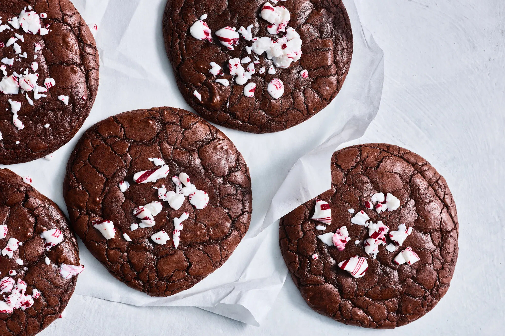

Peppermint Brownie Cookies
40 mins
Medium Difficulty
Brownies can be contentious. You may be an edge person or someone who loves middle pieces, a fudgy fanatic or a cakey purist. These cookies will please all brownie lovers, with chewy edges, tender centers and crunch from crushed peppermint candies. While any unsweetened cocoa powder will work in this recipe, Dutch-processed cocoa will make the cookies taste more chocolaty and round out their peppermint flavor. Whisking the eggs and sugars for a long time may seem fussy, but this process gives the cookie body, makes the batter easier to scoop and ensures a shiny top, the hallmark of any good brownie.
Source: New York Times Cooking View Recipe →